Ingénieur Systèmes d'Information & Ingénierie Financière.
Piloter la performance par la Data et la Stratégie.
À propos de moi
Futur ingénieur diplômé de l'ECAM-EPMI, je suis spécialisé en Management des Systèmes d'Information (MSI) et Ingénierie Financière. Ce double cursus me permet de maîtriser à la fois les enjeux stratégiques de la finance et les leviers technologiques pour les résoudre.
De la modélisation financière (Cash Flows, VAN) à l'architecture Cloud (Azure) en passant par la Business Intelligence (Power BI, Excel Power Pivot), j'ai développé une approche "Data-Driven" pour optimiser la prise de décision et sécuriser les processus bancaires et industriels.
Je suis à la recherche d'un stage de fin d'études de 6 mois, disponible dès septembre 2026. Prêt à m'investir au sein de vos équipes en tant que :
Power BI Desktop · Excel Power Pivot · ETL · DAX Avancé
Projet 1 : Supply Chain E-commerce
Power BI Desktop · ETL, Star Schema, Analyse NPS
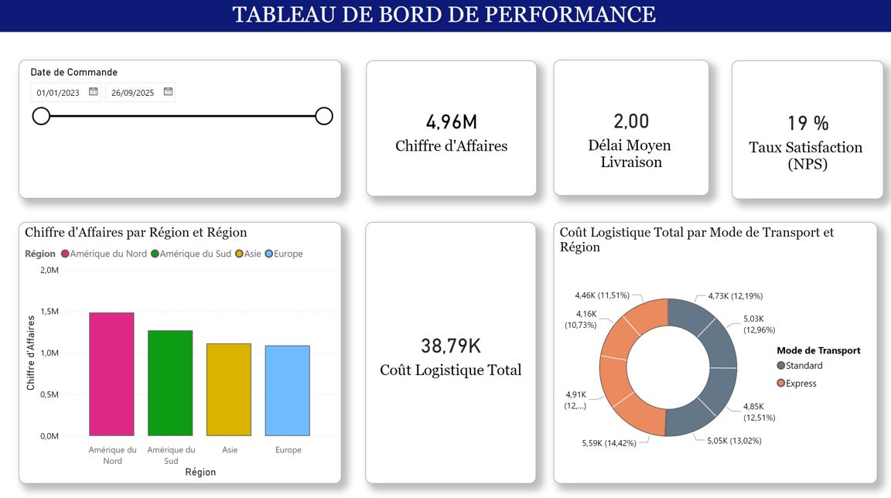
Le Challenge : Optimiser la Supply Chain d'un acteur E-commerce international en centralisant des données hétérogènes (ERP, CSV) pour réduire les coûts et améliorer la satisfaction client.
Ma Solution : Conception d'un système décisionnel complet, de l'ingestion brute à la visualisation, entièrement sous Power BI Desktop.
1. Data Engineering & Modélisation
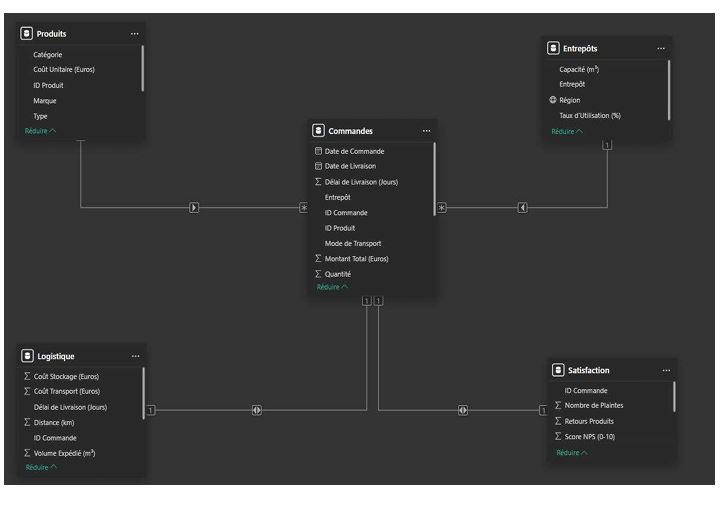
Architecture (Star Schema) : Conception d'un modèle en étoile reliant une table de faits centrale aux dimensions analytiques (Produits, Entrepôts, Clients). Ce choix garantit des performances de requêtes optimales et une lisibilité maximale du modèle pour toute l'équipe.
ETL (Power Query) : Nettoyage, transformation et standardisation des données sources hétérogènes. Aucune donnée corrompue ne remonte dans les rapports ; la fiabilité des indicateurs repose entièrement sur cette étape.
2. Analyse de la Performance Logistique
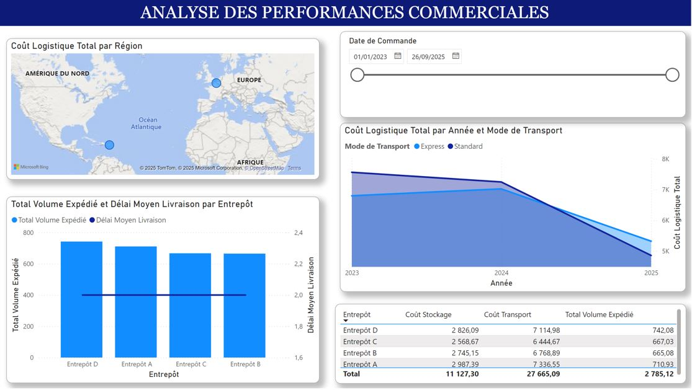
IdentifiésZones de surcoûts logistiques
DétectéeSurcapacité de stockage (coût du vide)
Cartographie dynamique : La visualisation géographique a permis d'identifier immédiatement les zones où les coûts de transport dépassaient les seuils acceptables, information impossible à lire dans un tableau brut.
Coût du vide : L'analyse croisée stock/demande a mis en évidence une surcapacité de stockage sur certaines références, générant un coût fixe non compensé par les ventes. Recommandation : réduction du stock tampon sur ces SKUs et réallocation vers les références à forte rotation.
Insight : La cartographie a révélé que les surcoûts logistiques ne sont pas uniformément répartis ; ils se concentrent sur 2 régions précises, permettant une action chirurgicale plutôt qu'une refonte globale de la politique transport.
3. Satisfaction Client (NPS)
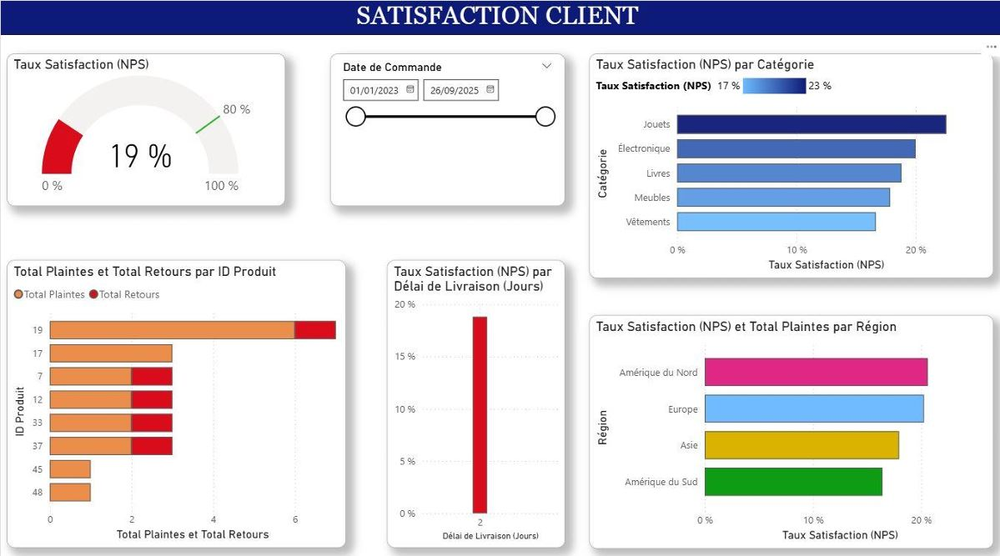
19 %NPS · Taux critique détecté
ConformesDélais de livraison
Paradoxe révélé : Un NPS de 19% est alarmant malgré des délais de livraison conformes aux engagements. Cela indique que la satisfaction est dégradée par un autre facteur, très probablement la qualité des produits reçus ou l'expérience de déballage.
Décision data-driven : Ce constat a permis de réorienter les investissements prévus pour l'accélération du transport vers le contrôle qualité amont, décision contre-intuitive rendue possible grâce à la granularité de l'analyse.
Impact Business : Sans ce dashboard, l'entreprise aurait continué d'investir dans la vitesse de livraison sans jamais résoudre la vraie cause de l'insatisfaction client. La BI a permis d'éviter une dépense inutile et de cibler le vrai levier de progression.
Projet 2 : Analyse Opérationnelle
Microsoft Excel · Power Pivot, Logistique, KPI Commerciaux
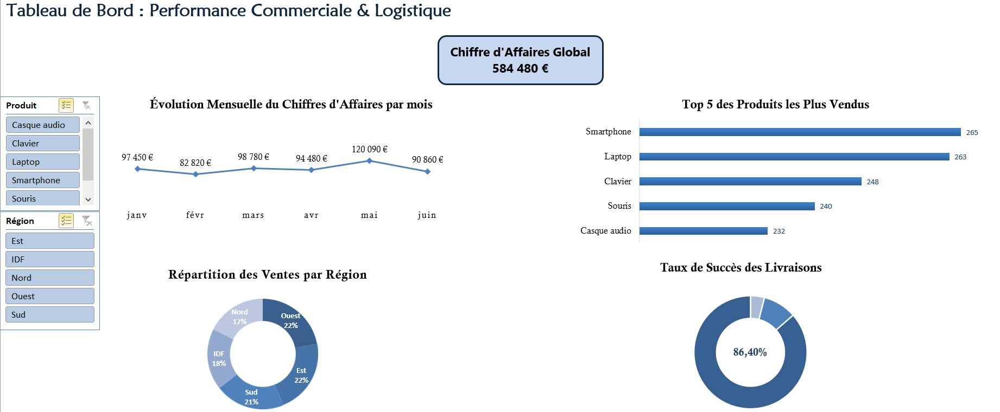
Le Challenge : En pleine phase d'expansion, l'entreprise a atteint un Chiffre d'Affaires global de 584 480 €. Cependant, les retours clients concernant les retards se multipliaient. Le défi était d'identifier précisément où la chaîne logistique perdait en efficacité malgré l'explosion des ventes de Smartphones et de Laptops.
584 480 €CA Global
86,40 %Taux de succès livraisons
13,60 %Taux d'échec · Signal d'alerte
1. Conception de l'Outil de Pilotage
Outil : Dashboard agile conçu sous Microsoft Excel (Power Pivot) pour corréler les flux de ventes et les performances de transport sur une période de 6 mois (janvier à juin).
Analyse de flux : Utilisation de segments (slicers) interactifs permettant un filtrage instantané par produit (Smartphone, Laptop, Clavier, Souris, Casque audio) et par région (Est, Ouest, IDF, Nord, Sud), sans aucune formule manuelle à recharger.
Visualisations consolidées : Évolution mensuelle du CA (pic à 120 090 € en mai), Top 5 produits, répartition régionale des ventes et taux de succès des livraisons dans une seule vue de pilotage.
2. L'Insight Décisif
Signal masqué par la croissance : Un taux de livraisons réussies de 86,40% peut sembler correct au premier regard. Ramené au volume de commandes, il représente pourtant un nombre significatif de clients mécontents chaque mois, soit un risque réputationnel direct.
Zones critiques identifiées : En croisant les données ventes et livraisons, les régions Est et Ouest (22% du CA chacune) concentraient les retards les plus critiques, exposant 44% du CA total à un risque de défaillance logistique.
Paradoxe produit : Les produits les plus vendus, Smartphone (265 unités) et Laptop (263 unités), subissaient le plus fort volume de retards. La croissance elle-même alimentait la friction : plus les ventes accéléraient, plus la logistique saturait.
Impact Business : Cette visibilité a permis à la direction de réallouer des ressources logistiques et de renforcer les stocks tampons dans les zones Est et Ouest, sécurisant la croissance du trimestre suivant sans augmentation du budget transport global.
Projet 3 : Rentabilité Marketing
Power BI Desktop · DAX Avancé, ROAS, Performance Q1 2026
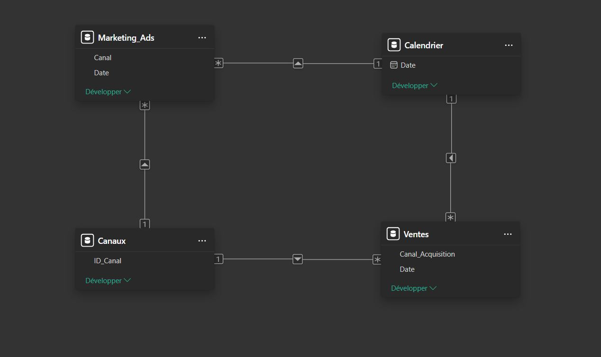
Le Challenge : Avec un budget publicitaire de ~30K€ réparti sur plusieurs canaux (Google Ads, Facebook Ads, Emailing, Direct), l'entreprise naviguait à vue. Le sentiment général était positif, mais personne ne pouvait isoler la rentabilité réelle de chaque euro investi par canal d'acquisition.
1. Modélisation Avancée des Données
4 tablesModèle en étoile (Star Schema)
DAXTable Calendrier générée en code
ISFILTEREDROAS dynamique & fiable
Schéma en Étoile : Le modèle relie une table de faits Ventes à trois dimensions : Canaux, Marketing_Ads et une table Calendrier centrale créée entièrement en DAX. Cette architecture garantit une intelligence temporelle parfaite (filtrage par jour, mois, trimestre, cumul annuel) sans redondance de données.
ROAS Dynamique : La mesure ROAS utilise les fonctions ISFILTERED et BLANK pour retourner un résultat vide, et non un chiffre trompeur, lorsque le contexte de filtrage est trop granulaire. C'est une décision de Data Integrity : un mauvais KPI affiché coûte plus cher qu'un KPI absent.
2. Analyse Multicanale & Arbitrage Budgétaire
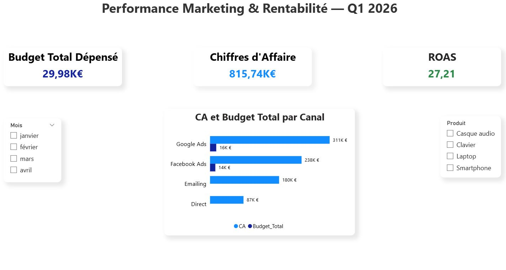
815,74 K€CA Q1 Global
27,21ROAS Global
29,98 K€Budget Total Dépensé
Canal dominant : Google Ads génère le CA le plus élevé (311K€ au global) avec seulement 16K€ investis, soit le meilleur rapport rendement/coût de tous les canaux. Ce résultat plaide pour une concentration du budget sur ce levier.
Emailing sous-estimé : Avec 180K€ de CA générés pour un budget parmi les plus faibles, l'Emailing affiche un ROAS implicite remarquable, canal à fort potentiel souvent négligé au profit des paid ads.
Décision data-driven : L'arbitrage budgétaire en temps réel a permis de réduire les dépenses sur les canaux moins performants au profit de Google Ads et de l'Emailing, propulsant le CA global à 815,74K€ sur le trimestre.
3. Analyse Granulaire par Filtrage Croisé
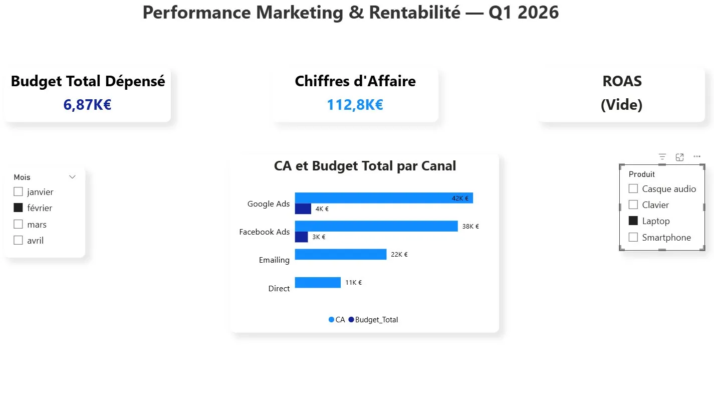
Zoom Février × Laptop : En isolant ce segment, le dashboard révèle 112,8K€ de CA générés avec seulement 6,87K€ de budget, performance exceptionnelle qui aurait été noyée dans les agrégats sans cette capacité de drill-down.
ROAS affiché vide : Sur ce filtre granulaire, le ROAS s'affiche intentionnellement vide grâce à la mesure ISFILTERED. Un calcul CA/Budget à ce niveau serait mathématiquement faux car les budgets ne sont pas attribués par produit dans la source. C'est la robustesse du modèle qui s'exprime.
Impact Business : Un ROAS global de 27,21 signifie que chaque euro investi en publicité a rapporté 27€ de chiffre d'affaires. Cette visibilité a transformé la gestion du budget marketing, passant d'une répartition intuitive à un pilotage par la donnée, trimestre après trimestre.
Pilotage fonctionnel · Recueil de besoin · Arbitrages produit · Terrain & Corporate
Projet 1 : Transformation SI — MOA Bancaire
BRF Capital · 850 M€ de budget · Migration Excel vers Power BI · Pilotage bout en bout
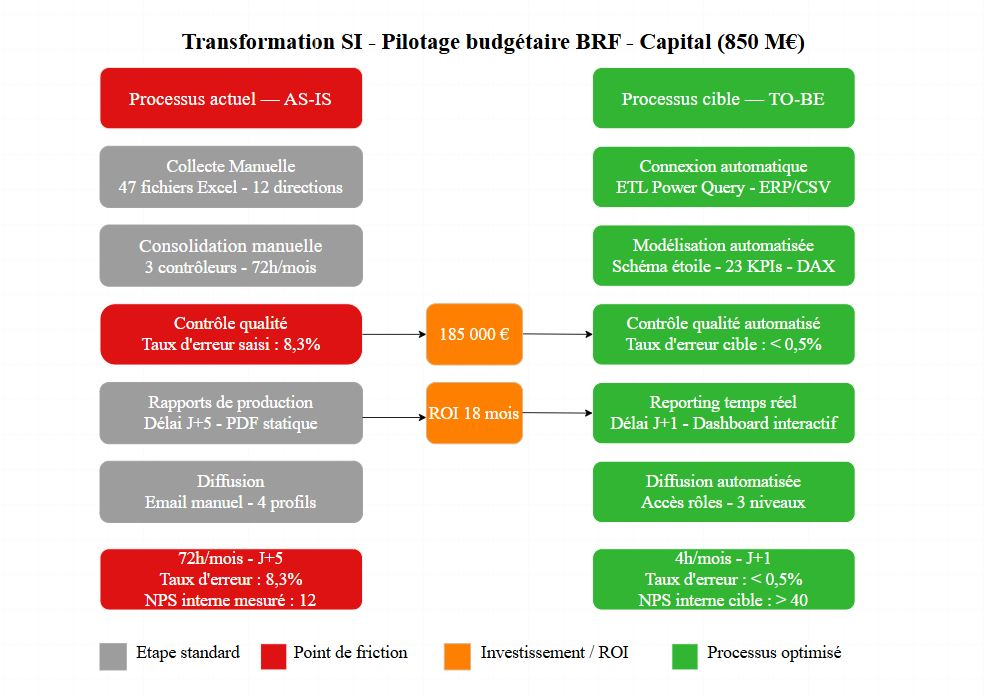
Le Challenge : BRF Capital, banque régionale de 2 500 collaborateurs gérant un budget de 850 M€, consolidait manuellement 47 fichiers Excel issus de 12 directions. Résultat : 72h de travail par mois pour produire un reporting entaché d'un taux d'erreur de 8,3%, livré en J+5.
La Mission (rôle MOA) : Piloter la transformation SI de bout en bout, de la cartographie des processus existants à la présentation COMEX, en produisant l'intégralité des livrables projet.
72h/moisConsolidation manuelle réduite à 4h
8,3%Taux d'erreur ramené à < 0,5%
J+5 à J+1Délai de reporting
+183%ROI atteint en 18 mois
1. Cartographie AS-IS / TO-BE
AS-IS : Collecte manuelle de 47 fichiers Excel, 3 contrôleurs mobilisés, consolidation sans traçabilité, reporting PDF statique diffusé par email.
TO-BE : Connexion ETL automatique via Power Query et ERP/CSV, modélisation Star Schema, 23 KPIs calculés en DAX, dashboard Power BI interactif diffusé avec gestion des rôles sur 3 niveaux.
Outil : Schéma produit sous draw.io avec code couleur structuré : points de friction en rouge, processus optimisés en vert, investissement et ROI en orange.
Insight : Sans cette cartographie, le COMEX n'aurait pas eu de base chiffrée pour arbitrer entre statu quo et transformation. Le schéma a rendu visible ce que 47 fichiers Excel cachaient depuis des années.
2. Cahier des Charges Fonctionnel — 8 sections
Périmètre fonctionnel : Couverture des 12 directions, 47 sources de données, 2 500 utilisateurs segmentés en 4 profils d'accès : Contrôleur, Manager, DAF et COMEX.
Exigences fonctionnelles : Connexion ETL automatisée, actualisation quotidienne des données, 23 KPIs définis avec formule DAX, filtres croisés par direction, période et entité.
Exigences non-fonctionnelles : Temps de chargement inférieur à 3 secondes, disponibilité à 99,5%, traçabilité des accès, conformité RGPD sur les données RH.
Matrice de traçabilité : Chaque exigence numérotée est liée à un livrable technique, un responsable et un critère de recette.
3. Matrice des Risques — Heatmap 4×4
8Risques identifiés
3Risques critiques (score ≥ 9)
185 K€Budget total du projet
Risques critiques identifiés : Résistance au changement des contrôleurs (P4 × I4 = score 16), qualité insuffisante des données sources (P3 × I4 = 12), dépassement budgétaire en phase de déploiement (P3 × I3 = 9).
Plans de mitigation : Programme de conduite du changement avec formations et ambassadeurs métier, audit qualité des données en amont du chargement ETL, réserve budgétaire de 10% sur le lot déploiement.
Heatmap 4×4 : Visualisation colorée Probabilité × Impact permettant une lecture immédiate des priorités de traitement pour le comité de pilotage.
4. Planning Projet — Gantt 24 semaines / 14 jalons
6 phases : Cadrage (S1 à S2), Analyse et Conception (S3 à S6), Développement ETL (S7 à S12), Modélisation Power BI (S13 à S16), Tests et Recette (S17 à S20), Déploiement et Formation (S21 à S24).
14 jalons : Validation CDC, livraison maquette, recette utilisateur, go-live, bilan ROI. Chaque jalon conditionne le passage à la phase suivante.
Chemin critique identifié : La phase ETL est le goulet d'étranglement. Plan de contingence : ressource ETL additionnelle activable en S8 si retard détecté.
5. Présentation COMEX — 10 slides
Structure exécutive : Contexte et Enjeux, Diagnostic AS-IS, Solution TO-BE, Business Case (ROI 18 mois, +183%), Risques et Mitigation, Planning, Gouvernance, Demande de validation budgétaire.
Argumentation financière : Investissement de 185 000€ amorti en 18 mois grâce aux gains de productivité (68h/mois économisées × coût horaire contrôleur) et à la réduction du risque d'erreur de reporting.
NPS interne : Indicateur de satisfaction des équipes finance, avec un objectif de passer de 12 à plus de 40 grâce à l'allègement de la charge de consolidation manuelle.
Impact Business : Un investissement de 185 000€ amorti en 18 mois grâce à 68h économisées chaque mois. Sans le Business Case structuré, ce projet restait une bonne idée sans budget pour exister.
Projet 2 : Système de Présence Anti-Fraude GPS — Stand Info
MOA & Product Owner · Google Sheets / Apps Script · Low-Code · Géolocalisation · En production
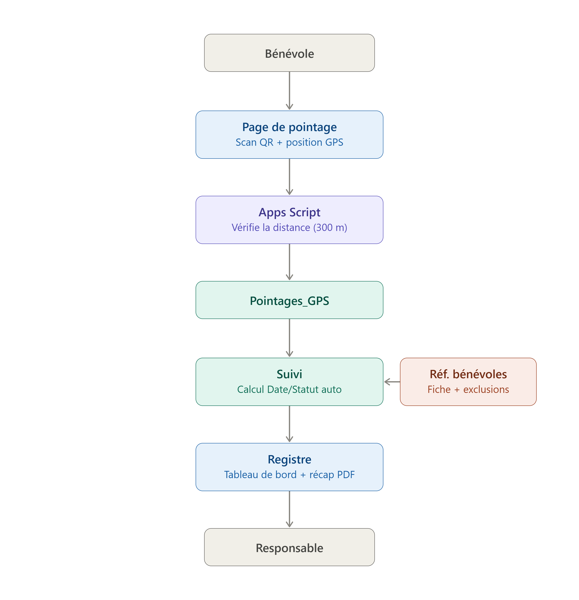
Le Challenge : Une association gérant un stand d'information peinait à suivre les présences d'une trentaine de bénévoles. Le système existant feuilles papier puis tableau Looker Studio bricolé ne permettait ni suivi individuel jour par jour, ni protection contre les pointages frauduleux à distance, et contenait des données corrompues par des années de ressaisie manuelle.
Ma Mission (rôle MOA / Product Owner) : Piloter le projet de bout en bout recueil de besoin, arbitrages fonctionnels, tests, gestion d'incidents et documentation en m'appuyant sur un pipeline low-code (Google Sheets, Apps Script) et un développement assisté par IA pour l'implémentation technique.
Diagnostic : Identification de 1 651 lignes dupliquées (36% du volume total) et d'incohérences de saisie (noms tronqués, doublons de fiches membres) faussant l'ensemble des indicateurs de présence.
Correction sans perte : Nettoyage et restructuration du référentiel avec vérification systématique avant application aucune suppression à l'aveugle, historique intégralement conservé.
Insight : 36% de doublons sur un dataset de 4 563 lignes, c'est un tiers des décisions de présence faussées. Avant cet audit, le système indiquait des taux d'assiduité erronés depuis des années sans que personne ne s'en aperçoive.
2. Cadrage Fonctionnel Itératif
Règles métier complexes : Traduction de contraintes réelles en logique de calcul exploitable alternance d'équipes le vendredi, horaires décalés le dimanche, tolérance de retard configurable, gestion des pauses temporaires vs suppressions définitives. Chaque règle ajustée sur plusieurs cycles de validation avec le commanditaire.
Arbitrages produit : Décision et justification de choix structurants pondération Présent/Retard dans le taux de présence, traitement différencié pause vs suppression définitive d'un membre, gestion des exclusions de dates.
3. Sécurisation par Géolocalisation
Anti-fraude GPS : Conception d'une vérification de position basée sur la formule de Haversine tout pointage effectué à plus de 300m du stand est automatiquement rejeté, avec double contrôle client et serveur (Apps Script).
Expérience utilisateur : Parcours de pointage réduit à 3 actions (scan QR code → sélection du nom → autorisation de position), pensé pour une équipe entièrement non-technique.
Mode de test : Environnement dédié permettant la validation complète du système sans déplacement physique indispensable pour les cycles de recette à distance.
4. Industrialisation & Documentation
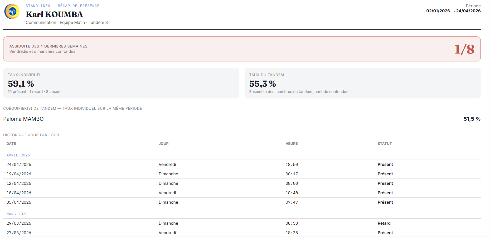
Architecture résiliente : Séparation stricte des données brutes et des données calculées après plusieurs incidents de production aucun script ne peut jamais corrompre les données sources, quelles que soient les manipulations en amont.
Livrable final : Registre autonome connecté en direct affichant taux individuel, taux tandem, historique jour par jour avec statut (Présent / Retard / Absent) et récapitulatif PDF exportable par bénévole.
Passation : Documentation technique de 12 pages couvrant l'architecture complète, les procédures d'administration, les incidents résolus et les limites connues permettant une reprise autonome du projet sans intervention extérieure.
Impact : Un outil utilisé quotidiennement en production par une équipe non-technique, avec une donnée fiabilisée à 100% et un historique de présence entièrement audité sans budget ni infrastructure payante. C'est le seul projet du portfolio où de vrais utilisateurs dépendent du système chaque semaine.
Dashboard Power BI connecté à la base SQLite via pipeline ETL Python
Le Challenge : Une institution financière détectait ses anomalies AML (Anti-Money Laundering) manuellement en 7 jours. Aucun scoring de risque, aucune traçabilité automatisée, zéro alerte en temps réel. Le risque de non-conformité réglementaire était direct.
La Solution : Conception d'un pipeline ETL de bout en bout couvrant l'ingestion, la transformation, le chargement en base SQLite, le scoring statistique et la génération automatisée d'alertes, orchestré en un seul fichier main.py et exécuté en 1,63 seconde.
10 000Transactions analysées
1,63 sDurée pipeline complet
105Alertes critiques détectées
2 094Alertes totales générées
1. Architecture ETL Modulaire — 5 modules Python
extract.py : Ingestion des données depuis fichiers CSV (10 000 transactions) et JSON (100 clients), avec logs horodatés automatiques à chaque étape.
transform.py : Nettoyage des doublons, validation des montants, enrichissement avec 5 colonnes calculées : heure, jour, mois, flag nocturne et flag destination à risque.
load.py : Insertion en base SQLite via SQLAlchemy, création de 3 tables et 3 vues SQL analytiques : v_transactions_suspectes, v_resume_client et v_transactions_critiques.
risk_scoring.py : Score de risque de 0 à 100 par transaction sur 4 critères pondérés. Seuil statistique μ+2σ calculé dynamiquement sur les montants normaux.
alerts.py : Filtrage CRITIQUE et ÉLEVÉ, log détaillé, sauvegarde en base et export CSV des 2 094 alertes horodatées avec statut OUVERTE.
2. Modèle de Scoring AML — 4 critères pondérés
40 ptsMontant aberrant (μ+2σ)
25 ptsPays destination à risque
20 ptsProfil client à risque
15 ptsTransaction nocturne 22h à 6h
Le seuil d'aberration est calculé dynamiquement sur les transactions normales : μ = 2 498 €, σ = 1 433 €, seuil μ+2σ = 5 363 €. Ce choix statistique évite tout seuil fixe arbitraire ; le modèle s'adapte aux données réelles.
3. Distribution des Risques
🔴 CRITIQUE
105
1,1 %
🟠 ÉLEVÉ
1 989
19,9 %
🟡 MODÉRÉ
3 118
31,2 %
🟢 FAIBLE
4 788
47,9 %
Alertes CRITIQUES (score ≥ 70) : 105 transactions, montant moyen de 50 657 €, destinations majoritaires Panama et Îles Caïmans, score uniforme à 85/100 (3 critères simultanément déclenchés).
Alertes ÉLEVÉES (score 40 à 69) : 1 989 transactions, montant moyen de 37 515 €, mix de destinations France, Panama et Îles Caïmans.
Export automatique : 2 094 alertes en CSV horodaté, prêt à être ingéré dans un outil de case management conformité.
Impact Business : Sans scoring automatisé, chaque analyste passait 7 jours à chercher manuellement ce que le pipeline détecte en 1,63 seconde. Le risque de non-conformité était absorbé en silence, transaction après transaction.
Architecture documentée : README professionnel avec schéma d'architecture, résultats chiffrés et instructions d'installation pas à pas.
Compatible PostgreSQL : Le moteur SQLAlchemy permet une migration vers PostgreSQL en modifiant uniquement la chaîne de connexion.
Valeur Ajoutée : Les critères de détection sont alignés sur les recommandations FATF/GAFI et la directive AMLD6. Le code est sur GitHub, documenté et prêt à tourner en production.
Le Challenge : Construire un portefeuille "High Conviction" d'actions européennes optimisé selon le couple Rendement/Risque, en surperformant le benchmark de référence.
Ma Solution : Application rigoureuse de la théorie de Markowitz couplée à une stratégie de rendement par le dividende (Yield Investing).
3,22 %Rendement dividende (portefeuille)
2,50 %Rendement dividende (benchmark)
+72 bpsSurperformance dividende
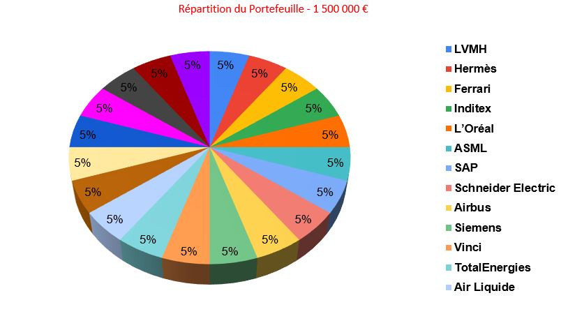
Théorie de Markowitz : Construction de la frontière efficiente pour identifier l'allocation maximisant le rendement espéré à un niveau de risque donné. Chaque titre a été évalué non pas isolément, mais pour sa contribution à la diversification du portefeuille global.
Surperformance : Un rendement dividende de 3,22% contre 2,50% pour le benchmark (+72 points de base) assure des flux de trésorerie supérieurs, réduisant la dépendance aux plus-values latentes pour générer du rendement.
Stratégie Yield : Sélection délibérée de leaders sectoriels à dividendes stables, approche défensive qui protège le portefeuille en période de volatilité tout en assurant un revenu récurrent.
Insight : Surperformer un benchmark de 72 points de base sur le dividende seul est significatif ; c'est un avantage composé qui s'amplifie dans le temps via le réinvestissement des dividendes (effet boule de neige).
Projet 2 : Financement Aéronautique (Airbus A320)
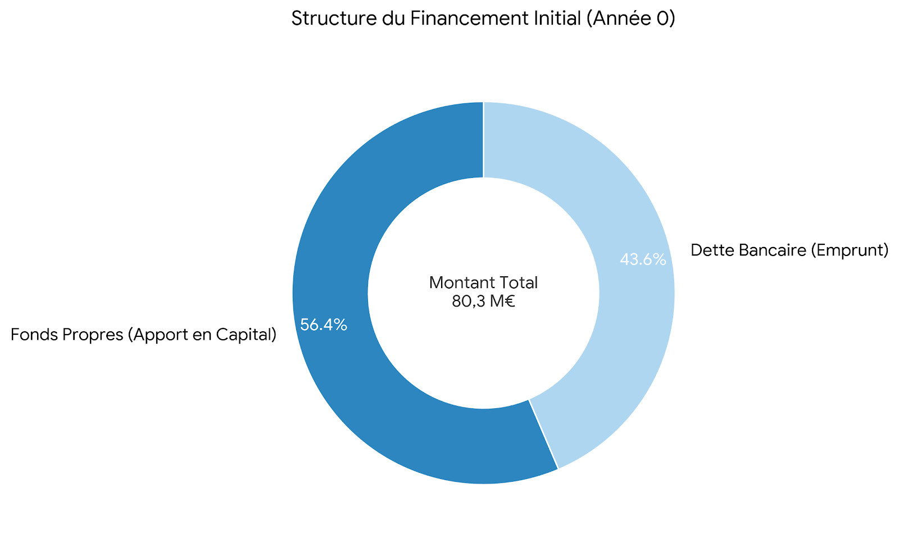
Le Challenge : Structurer le financement d'un investissement de 75 M€ (acquisition d'un Airbus A320) et valider sa rentabilité économique avant engagement.
75 M€Investissement total
21,9 M€VAN validée
23,74 %TRI du projet
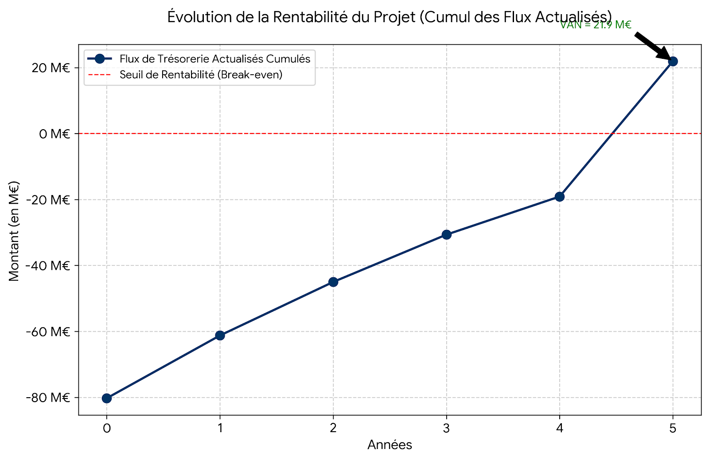
Modélisation des Cash Flows : Projection sur 5 ans intégrant les revenus locatifs, les charges de maintenance, l'amortissement de l'appareil et le service de la dette. La VAN positive de 21,9 M€ valide la création de valeur réelle de l'opération.
TRI à 23,74% : Ce taux de rentabilité interne dépasse largement le coût du capital de référence du secteur aéronautique ; l'investissement crée de la valeur bien au-delà du coût de son financement.
Ingénierie financière : Structuration optimisée Dette/Equity pour maximiser l'effet de levier financier, réduire le coût moyen pondéré du capital (WACC) et améliorer le retour sur fonds propres (ROE).
Impact Business : Un TRI de 23,74% sur un actif de 75 M€ dans le secteur aéronautique est une performance robuste. La structuration Dette/Equity a permis de démontrer qu'une optimisation du levier financier améliore le ROE sans détériorer la solvabilité de l'opération.
Le Challenge : Déployer une infrastructure Cloud sécurisée, multi-régionale et redondante, tout en maîtrisant les coûts opérationnels (OPEX) dans une logique FinOps.
Ma Solution : Architecture IaaS complète sous Microsoft Azure, de la conception réseau au monitoring budgétaire.
1. Architecture & Connectivité Internationale
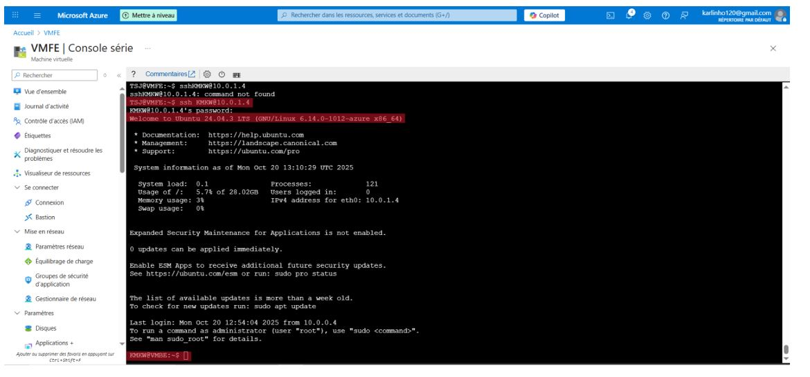
Multi-régionsPeering US / Europe
ValidésFlux sécurisés inter-VMs
SegmentéSous-réseaux public / privé
Réseau (VNet) : Segmentation en sous-réseaux publics et privés avec des règles NSG (Network Security Groups) strictes ; seuls les flux nécessaires sont autorisés, réduisant la surface d'attaque au minimum.
Peering International : Interconnexion des réseaux virtuels US et Europe via Azure VNet Peering, garantissant une latence maîtrisée et une continuité de service en cas de défaillance régionale.
Validation opérationnelle : Tests de connectivité end-to-end (ping, SSH via Azure Bastion) confirmant l'intégrité des flux entre toutes les VMs ; aucun flux non autorisé n'est passé lors des tests.
Insight Sécurité : L'utilisation d'Azure Bastion comme point d'accès SSH centralisé élimine la nécessité d'exposer les IPs publiques des VMs, décision d'architecture qui réduit drastiquement le risque d'intrusion sans complexifier l'administration.
2. Analyse FinOps & Optimisation des Coûts
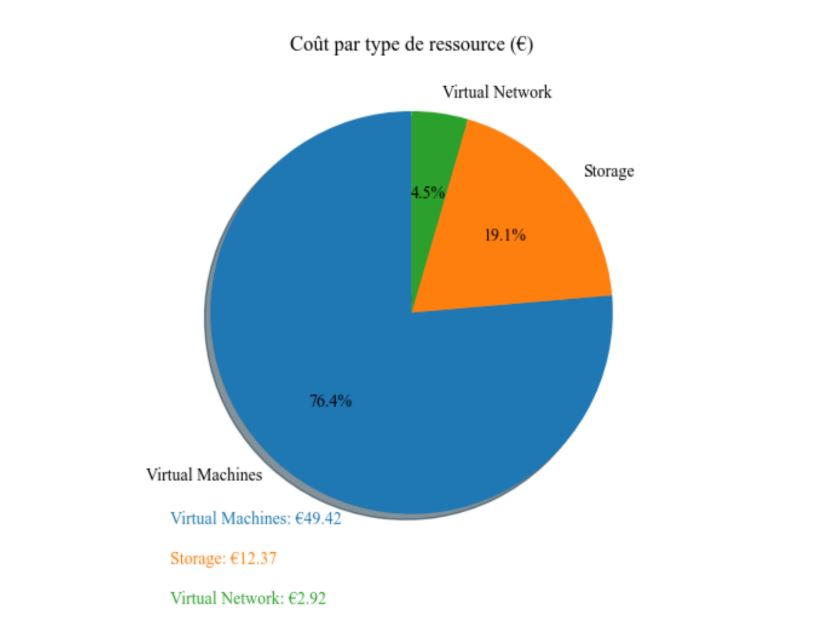
Répartition par ressource : Analyse de la consommation par type (Compute vs Storage vs Network). La visualisation révèle immédiatement les postes de dépense dominants, première étape indispensable avant toute action d'optimisation.
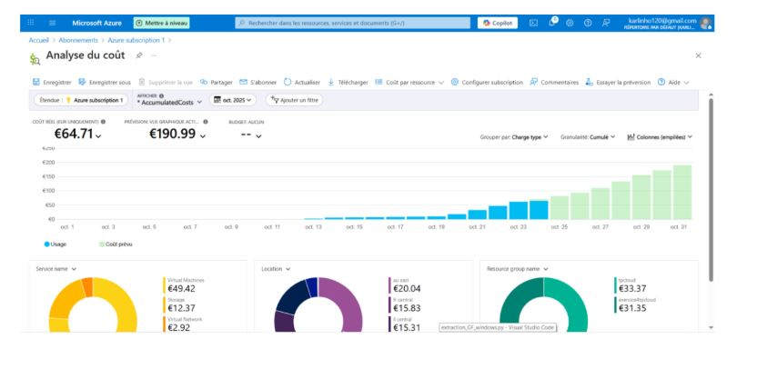
Rightsizing : Monitoring via Azure Cost Management permettant d'identifier les ressources surdimensionnées par rapport à leur usage réel. Un VM dimensionné pour 100% de charge qui tourne à 20% est un gaspillage budgétaire direct.
Gouvernance budgétaire : Mise en place d'alertes de dérive ; toute consommation dépassant le seuil défini déclenche une notification avant que le dépassement ne soit constaté en fin de mois.
Impact Business : L'approche FinOps transforme la gestion Cloud d'une logique de coût subi en levier de performance piloté. Chaque euro de Cloud dépensé est justifié par un usage mesurable ; c'est la condition pour qu'un DSI puisse défendre son budget OPEX devant un CFO.
Application de Réservation Ferroviaire · React.js / Node.js / MySQL
Le Challenge : Digitaliser le processus de réservation ferroviaire via une interface intuitive, sécurisée et scalable, en remplaçant un processus manuel sujet aux erreurs et aux doublons de réservation.
Ma Solution : Développement d'une application web fullstack (React.js / Node.js) pilotée en méthodologie Agile / Scrum.
React.jsFrontend · SPA dynamique
Node.jsBackend · API REST
MySQLBDD relationnelle normalisée
1. UI/UX Design
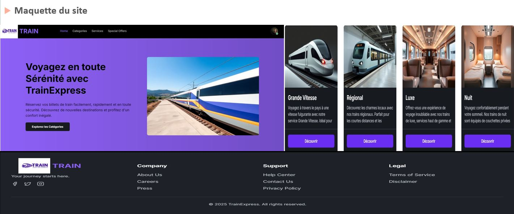
Frontend React.js : Interface responsive permettant la recherche de trajets, la sélection de sièges et la confirmation de réservation en temps réel, sans rechargement de page grâce à l'architecture SPA (Single Page Application).
Pilotage Agile : Développement par sprints avec backlog priorisé sous Jira. Cette méthode a permis de livrer des fonctionnalités testables à chaque itération, en intégrant les retours utilisateurs rapidement.
2. Architecture de Données
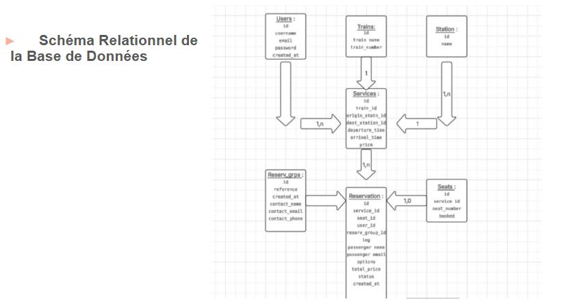
Modèle Conceptuel de Données (MCD) : Conception d'un schéma relationnel normalisé garantissant l'intégrité référentielle des transactions complexes ; un utilisateur ne peut pas réserver un siège déjà occupé, et toute annulation libère correctement la disponibilité.
API REST (Node.js) : Architecture en couches séparant clairement la logique métier, les routes API et l'accès aux données ; structure maintenable et extensible, prête à accueillir de nouvelles fonctionnalités (paiement, programme de fidélité) sans refonte.
Valeur Ajoutée : Ce projet démontre la capacité à mener un cycle complet de développement, de la maquette UX au déploiement en base de données, en autonomie et en équipe. Une compétence clé pour un profil Finance/SI qui permet de dialoguer d'égal à égal avec les équipes techniques lors de projets de transformation digitale.
Ma Valeur Ajoutée : Une double compétence rare alliant la rigueur de l'Ingénierie Financière à la puissance des Systèmes d'Information. Je conçois les outils techniques qui permettent de piloter la stratégie financière et je maîtrise les deux langages : celui du DAF et celui du DSI.
Finance & Business Intelligence
Transformer la donnée brute en levier de performance économique.
Corporate Finance : Modélisation financière complexe (Business Plan, Cash Flows sur 5 ans), analyse de rentabilité (VAN, TRI, Payback) et structuration de Haut de Bilan (Dette/Equity, effet de levier, WACC/ROE).
Finance de Marché : Gestion d'actifs (Asset Management), construction et optimisation de portefeuille (Markowitz/CAPM, frontière efficiente), stratégie dividende (Yield Investing) et analyse de risques.
Business Intelligence : Maîtrise complète de la chaîne de valeur Data : ETL (Power Query / Python), modélisation (Star Schema, tables Calendrier DAX), mesures avancées (ROAS dynamique, ISFILTERED, BLANK) et visualisation (Power BI Desktop).
Analyse Opérationnelle : Construction de tableaux de bord interactifs sous Excel (Power Pivot, slicers), corrélation de flux de ventes et de performance logistique, identification de zones de friction et recommandations actionnables à la direction.
Conformité & AML : Conception de pipelines de détection d'anomalies financières (Anti-Money Laundering), scoring de risque statistique (μ+2σ), génération d'alertes automatisées, alignement FATF/GAFI et AMLD6.
Cloud & Ingénierie IT
Déployer des infrastructures résilientes, sécurisées et optimisées.
FinOps & Cloud Cost Management : Pilotage et optimisation des coûts Cloud (OPEX), dimensionnement des ressources (Rightsizing), gouvernance budgétaire et alertes de dérive via Azure Cost Management.
Data Engineering : Pipelines ETL Python (Pandas, SQLAlchemy), bases de données relationnelles (SQLite / PostgreSQL / MySQL), architecture modulaire et gestion de versions (Git/GitHub).
Développement Fullstack : Conception d'applications Web modernes (React.js SPA, Node.js API REST), design de bases de données relationnelles normalisées (MySQL, MCD).
Gestion de Projet & Méthodes : Pilotage hybride adapté au contexte : Agile / Scrum pour les projets IT (itérations courtes, livraisons fréquentes) et Cycle en V pour les projets industriels/financiers (jalons stricts, validation formelle).
Savoir-Être : • Rigueur Analytique : Fiabilité absolue dans le traitement des chiffres et des modèles ; zéro approximation sur les KPIs présentés à la direction.
• Pédagogie "Bridge" : Capacité à traduire les enjeux techniques en langage métier (DAF, COO) et inversement ; atout clé en MOA et en consulting SI.
• Adaptabilité : Curiosité technique et apprentissage continu ; capable de monter en compétence rapidement sur un nouvel outil ou un nouveau secteur.